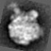
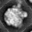

| .OPERATION: | OR R | ; Orientation Search |
| .EXPERIMENTAL IMAGE: | sav_avg000 | ; Experimental image (input) |
| .REFERENCE IMAGE: | sav_avg_315 | ; Reference image (input) |
| .FIRST, LAST RING & RING STEP: | 5,28,1 | ; Search radii, radius step |
| .FULL OR HALF CIRCLE (F/H): | Full | ; Full circle |
| .NUMBER OF PEAKS: | 4 | ; Four peaks |
| .OUTPUT ANGLE DOCUMENT FILE: | orr_doc | ; Angle doc file (output) |
| EXP. INPUT IMAGE | REF. INPUT IMAGE |
|---|---|
|  |  |
| sav_avg000 | sav_avg_315 |
| OUTPUT ALIGNMENT DOCUMENT FILE: orr_doc |
|---|
| ; tst/tst | 11-JAN-2013 | AT 11:30:22 | orr_ali_doc.m20 |
|---|---|---|---|
| ; KEY | ANGLE, | PEAK-HEIGHT | |
| 1 2 | 45.0050 | 0.811635 | |
| 2 2 | 337.568 | 0.578213 | |
| 3 2 | 112.409 | 0.578006 | |
| 4 2 | 265.310 | 0.514182 |